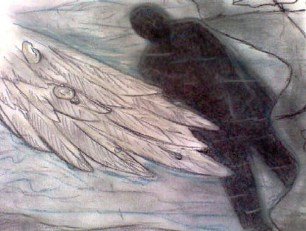

Poesía
Pájaro muerto en la lluvia, por Malthusea
Ruidos
(aguas
en rápida cascada hacia el centro
abierto entre rocas; voces
extrañas, extranjeras
venidas por una infinidad de conductos;
golpes de helados meteoros
contra las paredes de los días.)
Y bajo esos ruidos otros ruidos,
que los oídos casi no identifican
(¿el derrumbe
de la casa del verbo,
el choque del amor contra un seno,
oscuro?)
* * *
¿Cómo mirar al centro de las llamas
donde se retuercen los húmedos en pura alabanza?
¿Cómo soportar la gritería de los que no entienden,
se preguntan el uno al otro
y le preguntan a lo invisible, y no entienden?
¿Cómo explicar esos ruidos
detrás de las paredes,
como si azotaran la espalda de un niño
y sólo se oyese el golpe del látigo
y no los lamentos? ¿Cómo
decir aquella boca sin que se presente
en el acto esta otra boca, rota
y caída entre los cardos? ¿Cómo nacer
si todo empuja a morir?
* * *
Una vez llovió sobre un pájaro muerto
El viento abre y cierra una puerta
Una fotografía: un hombre con lodo hasta la cintura
La palabra alga y la palabra perro en una página de infancia
Una voz efímera y otra voz aún más efímera y una tercera,
casi inaudible entre los ruidos de la tormenta
Humo de algo que se quema, olvidado y remoto.
* * *
..., por Altamira
En el centro de la tierra,
un piano en silencio;
la música, los ruidos del mundo:
no hay animal que no grite,
chille, aúlle, bufe, resople;
no hay cosa que no cruja,
rechine, fermente, exhale.
En el centro, un hombre
inmóvil ante el teclado;
la música, los ruidos de los otros:
balbuceos, tartamudeos,
aplausos, gemidos, llamados,
imprecaciones, eructos,
flatos, ruegos, súplicas,
maldiciones, cánticos.
* * *
Hubo, se hizo, se dijo.
Oyeron, respiraron,
sintieron, durmieron, despertaron.
Hubo gravidez, frutos,
silencio, bordes, alimento.
Y fluir, corteza, danza.
Estuvo la inocencia y pasó.
Se oyó un gran ruido
de estrella rota en el centro.
Luego sal, ramas afiladas,
charcos, arena, sombras.
¿Qué envejeció sino el mundo?
¿Qué mundo surgió
sino una tenaz sucesión de residuos?
Entonces, ¿volver a escribir el libro
con lo que quedó, éter
o niebla, oquedad,
figuras sin nada que las lubrifique?